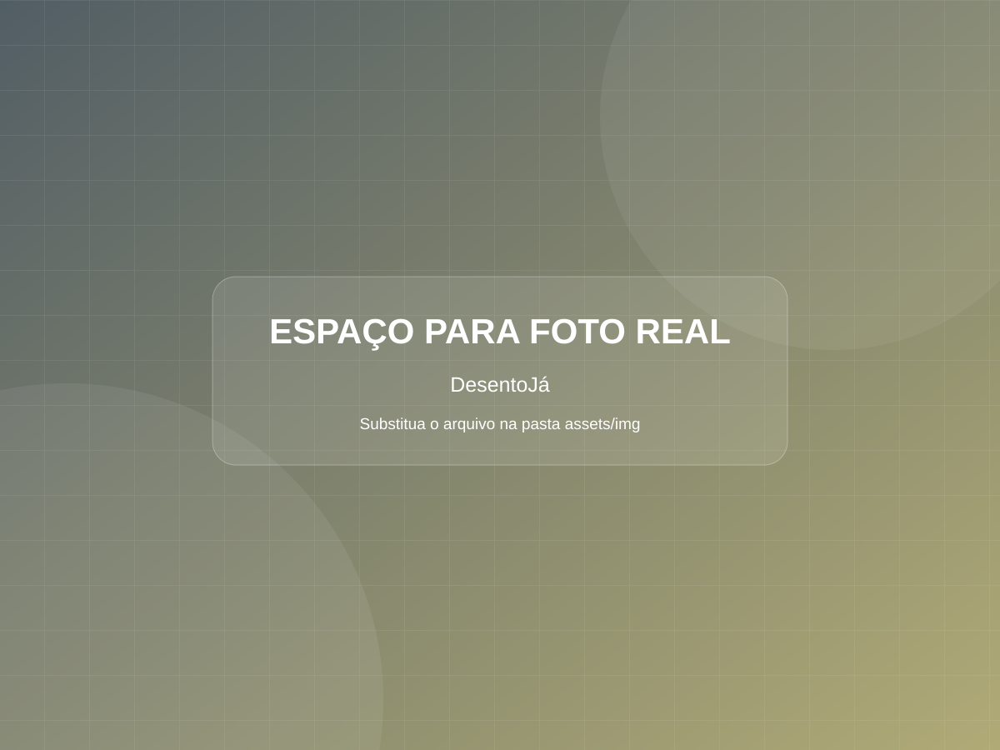

Você explica
Escolhe o serviço e resume a situação.
Atendimento organizado para desentupimento de pias, ralos e tubulações. Descreva o problema para receber orientação e orçamento.
Descrever meu problema ↘
A equipe recebe sua mensagem e confirma disponibilidade e preço. Não há serviço agendado automaticamente.
Escolhe o serviço e resume a situação.
O profissional avalia viabilidade e disponibilidade.
O orçamento é combinado diretamente pelo WhatsApp.